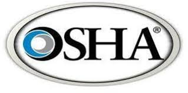
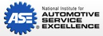

This program will have students develop plans for buildings and other structures using various building materials and creative layouts and designs. Students will apply technical knowledge and understanding of scientific principles, mathematical concepts and communicative and technical skills, including CAD, combined with laboratory experiences, which are supportive to the architect and the architectural engineer.
About certificationThe ASE Certification program in Automotive Technology provides the necessary foundation and practical experience to pursue entry-level positions that meet the changing demands of the automotive industry. Entry-level positions may be found in automotive dealerships, automotive franchises, independent service repair shops, auto part stores, or through self-employment. Students will learn the technical skills essential to employment in the field of maintenance technology, auto body care, chassis, diesel, and power train, leading to employment in service, maintenance, and areas of technological specialty such as detailing, auto body paint and refinishing, as well as management occupations or self-employment.
About certificationThis class is designed to provide students with the technical and procedurals skills required in accounting departments of today’s businesses. Students will complete competences in the following area: departmentalized accounting procedures, payroll procedures, decision making skills in budgeting and accounting principles in computerized accounting systems. Students in this class may be involved in the running of the school store.
About certificationStudents will obtain the skills, technical knowledge and work habits necessary to succeed in the construction industry. Students put classroom knowledge to work through hands-on activities in the lab and at the project house. Learning activities allow students to become knowledgeable in fundamental principles and methods of construction and to develop technical skills related to carpentry, electrical, plumbing, masonry and finish work. Instruction includes safety principles and practices; recognition of standard lumber sizes; foundation layout methods; building concepts and procedures; local, state and national codes; cost estimating; and blueprint reading. The curriculum focuses on familiarization with safety practices and the proper use of both hand and power tools. Instruction is provided in theories and techniques used in the construction field.
About certificationThe cosmetology pathway prepares you to earn state licenses. You will learn theory and practical applications as outlined in state regulations governing the practice of cosmetology by completing the steps for safe and effective cosmetic art services. Advanced students provide supervised cosmetic arts services to the public.
About certificationThe Culinary Arts & Hospitality Program implements an industry-based program that includes kitchen basics, safety and sanitation, purchasing and inventory control, customer service, and food and control cost. Students complete two years of instruction and pass national assessments during each year. They must also complete a minimum of 10 hours of non-paid internship. Upon completion, the students are ready for careers in the hospitality industry and post-secondary opportunities.
About certificationThe program prepares students for entry-level careers in repair and maintenance of diesel engines. Students have the opportunity to earn a Level 1 Certificate in Industrial Diesel Technology. Students in the program will apply their knowledge and skills in industry work experiences.
About certificationDo you enjoy enjoy teaching others? Do you have the patience to care for children and adults? Do you find joy in doing something different every day? If so you should check out the programs in the Education and Training cluster! The Education and Training programs and academies prepare students for careers related to family and human needs including teaching, social work, and early childhood education. Emphasis is placed on child interaction in a classroom setting.
About certificationThis course exposes students to the art and science of growing plants, shrubs, trees, flowers, fruits, and vegetables. They provide information regarding the care and propagation of plants, flowers, trees, and shrubs, but place a special emphasis on those used for decorative and aesthetic purposes. In doing so, they cover a wide variety of topics, including greenhouse and nursery operations, soils and media mixtures, fruit and vegetable production, turf/golf course management, interior and exterior plantscaping, irrigation systems, weed and pest control.
About certificationDo you want to learn how computers communicate? The Computer Systems Networking program focuses on the design, implementation, and management of computers and computer software. The course of study includes instruction in operating systems and applications, installing new hardware and software systems or components, identifying the causes of networking problems, and using diagnostic testing software and equipment.
About certificationThis competency-based core course is designed for all students seeking a career in the health care field. The course will focus on the concepts and principles of the structure, function and systems of the human body in relationship to human growth and development. Students will learn to recognize problem situations in health care settings as relate to direct and indirect patient care and they will demonstrate the use of critical and creative thinking skills and logical reasoning for problem resolution.
About certificationStudents will work in a broadcast studio setting to produce a variety of television programs. This course is intended to prepare students for a career operating television equipment including; audio mixer, video switcher, on air computer graphics, teleprompter, studio cameras and IFB systems. During the course students will learn the history of broadcast television, numerous crew positions on a broadcast team, determine how to create quality television programming, as well as broadcasting rules and regulations. Students will learn industry terminology, crew production assignments and job responsibilities. After completion of the course students will have the required experience to obtain an entry-level position in the television-broadcasting field.
About certification